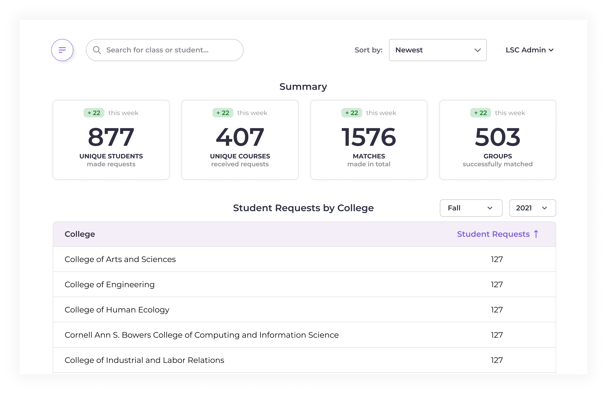
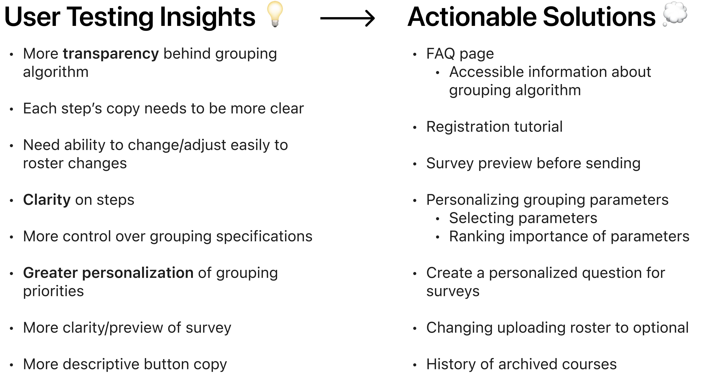

Zing, created by Cornell Digital Tech & Innovation. , tackles grouping students through 2 products: LSC and Grouper. LSC is a platform for the Cornell Learning Strategies Center to create groups for Study Partners. Grouper is a platform for Professors to create groups for projects, assignments, etc.
User Research, User Testing, Ideation, Product Thinking, Documentation
2 PMs, 2 TPMs, 5 Developers, 2 Designers
Zing makes it easier for users to create student groupings.
Professors: Use Grouper to group students for projects, assignments, etc. in their classes.
Cornell Learning Strategies Center (LSC): Use LSC to match students for their Study Partners program where students request partners to study with for a specific class.
Cornell LSC staff and professors want to create groups efficiently, but they can’t do that well because:
Stakeholders requested for a Metrics feature to help them understand student use of the Study Partners program!
Learning Strategies Center (LSC) Administrators
Pros:
Cons:
Pros:
Cons:
Pros:
Cons:
Pros:
Cons:
The metrics feature had final touches completed during high-fi iteration and was handed off for implementation by developers.
We conducted user testing with the V1 prototypes of Grouper and learned a lot...
From these ideas, we coalesced all our thoughts into sticky notes and evaluated brainstormed features.
I focused on the Course Archive feature to help professors access previously added classes.
Course Professors
Pros:
Cons:
Archive in the menu is fitting due to similar features also being grouped as menu items (statistics, settings, etc.) without being too intrusive, as Archived Courses wouldn’t be viewed especially often.
Pros:
Cons:
I came onto the team when the product had already been established, which forced me to gain familiarity with an entirely new product. Maybe my biggest takeaway was learning when to question previous designs and always be ready to do better to create the great final LSC that has already been implemented and entirely handed off to our stakeholders.
Especially given the super talented Zing team, we realized that we wanted to create a product that would truly be meaningful and have an impact in our community. After realizing that Grouper would unfortunately not meet those hopes, we decided to let the product go. As we talked with professors, we realized that grouping students, while annoying, was also a process they were willing and wanted to take an active part in, even though time-consuming. Given professor reluctance and the individuality of the way professors create groups depending on their classes, is this a problem space the product can truly be impactful with?